Kunst Am Bau für den Forschungsneubau für Supramolekulare Funktionale Architekturen an Biogrenzflächen (SupraFAB) an der FU Berlin.
SUPRA SWING ist ein interaktives Schaukelobjekt, das auf den naturwissenschaftlichen Grundsätzen dreier gekoppelter Pendel, sogenannter „sympathischer Pendel“, basiert.
SUPRA SWING verweist auf unvorhergesehene kommunikative Prozesse und lädt zum Mitschwingen ein - Schaukeln als ein genuin freudvoller Prozess, in Schwung zu kommen.
Unvorhersehbare Pendeleffekte spielen auch in Gruppenprozessen eine Rolle. In unterschiedlichsten Interaktionen tragen „zwischenmenschliche Schwingungen“ einen großen Teil dazu bei, wie Verständigung funktioniert, mithin auch wie die interdisziplinäre Forschungsarbeit zwischen Forscher*innen verschiedener Fachgebiete vorankommt. Interessant wird es, wenn die Schaukelnden sich abstimmen, gemeinsam experimentieren und kooperativ schaukeln.
Im Atrium des SupraFAB, das als Ort interner Kommunikation genutzt wird, ist das Supra Modell, ein abstrahiertes Modell der Supra Swing, aufgestellt. In seinen Eigenschaften stimmt es mit dem Original überein. Modelle vereinfachen die Wirklichkeit und dienen einem bestimmten Zweck: Die Pendel des feingliedrigen SUPRA MODELLS bewegen sich, ohne dass sie einen sichtbaren Impuls erhalten. Könnte eine Verbindung zwischen diesem Modell im Innenraum und dem Schaukelobjekt im Außenraum existieren?Im Supra Modell sind, wie beim Außenobjekt, drei Pendel miteinander gekoppelt. Die Pendel geraten in vergleichbare, jedoch extrem zarte Bewegung. Das SUPRA MODELL fordert zum kurzen Verweilen auf und versinnbildlicht besondere Verbindungen wischen innen und außen.
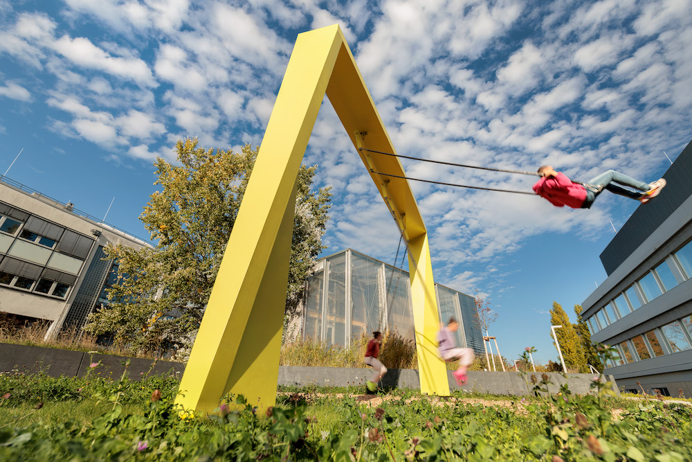
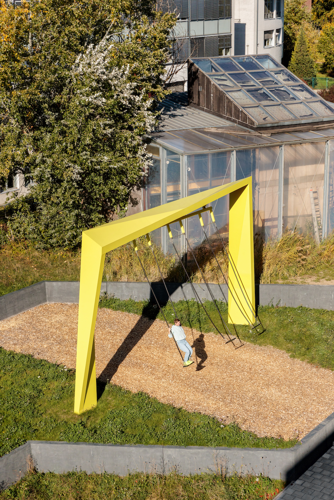
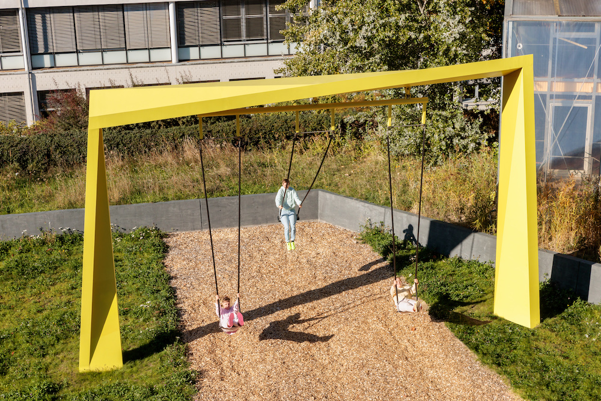
Die Energie der Schaukelnden wird, wie von Geisterhand gesteuert, von einem zum anderen übertragen. Es kann sich dabei ereignen, dass eine Schaukel nahezu stehen bleibt, während die anderen dynamisch höher streben – im nächsten Moment kann sich dieses Prozedere vollkommen umkehren...
Fotos: ©Robert Lehmann/lichtbilder-berlin
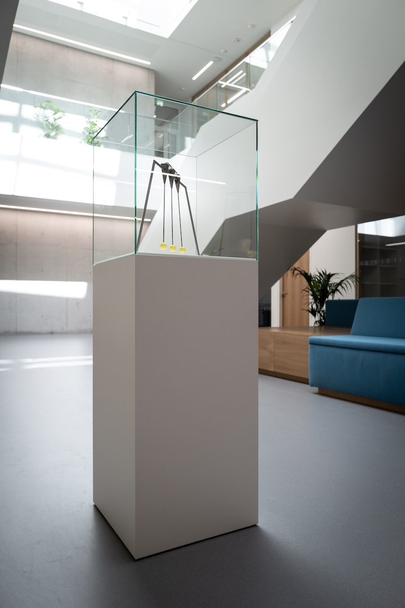
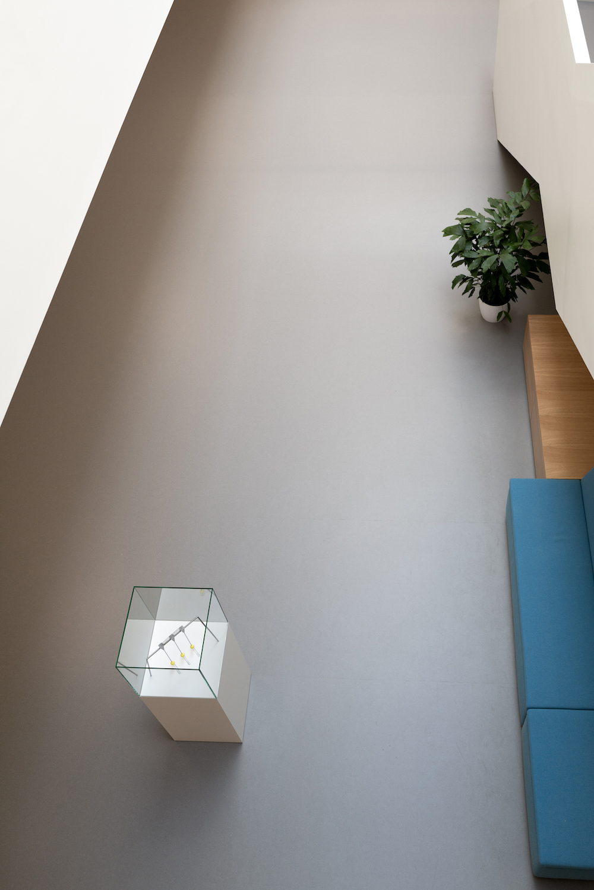
Supra Modell im Atrium des SupraFab FU Berlin
Supra Swing Projektteam: Künstlerin: Katja Marie Voigt Architektin: Anna Kalvelage Physikalische Beratung, Innovationen und Tragwerksplanung: Dr. Jona Kurpiers Projektleitung: Tom Mahnke CAD, Konstruktionsplanung, Prototypenbau: CNC Berlin Statik Rahmen: StudioC Statik Pendel: Art Engineering Gmbh Fertigung Supra Modell: CNC Berlin Fertigung, Programmierung Supra Modell: Jens Weber mediaarchitecture
Im Kartenspiel zum Selbstwert geht es um konsequente Einschätzungen seiner selbst und der Spielpartner*in. Es werden Bewertungen auf der Basis eines psychologischen Persönlichkeitsscore, des O-C-E-A-N - Score, abgegeben. Dem Kartenspiel zum Selbstwert liegt das Experiment „Tiny Data“ zugrunde. Spielanalage und Spielidee ersetzen konsequent die Strategie der anonymen Fremdbewertungen durch authentische Selbst- und Fremdwahrnehmungen mit den entsprechenden Bewertungen. Im Ausstellungskontext sind Besucherinnen und Besucher eingeladen, das „Kartenspiel zum Selbstwert“ selbst im „Tiny Data Casino“ am Casinotisch zu spielen. Das Spiel wird dann durch einen Croupier angeleitet und die Spielenden werden eindrucksvoll durch das Spiel geführt.
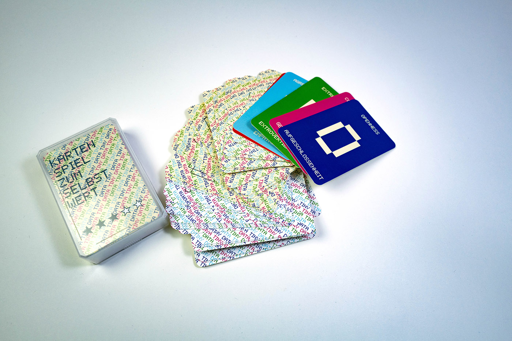
Kartenspiel zum Selbstwert
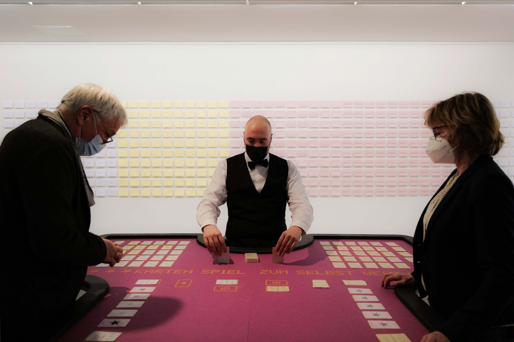
Kartenspiel zum Selbstwert im Tiny Data casino, Kunsthalle Erfurt 2022
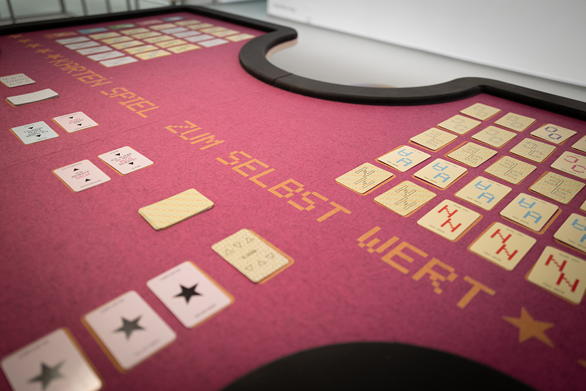
Tiny data ist ein analoges Echtzeit-Tracking-System, das 100 Selbstbewertungen umfasst, die in 100 Interaktionen mit unterschiedlichen Kommunikationspartner*innen gesammelt wurden. In dem subjektiv erhobenen Datenstock werden zeichnerische Protokolle generiert, die Aussagen über die erlebte Intensität der jeweiligen Situation,und über das Verhältnis zum physischen Gegenüber abbilden.
Wir leben in einer Ära des Rankings – in unserer Gegenwart existiert diese nicht greifbare Macht von Menschen, die andere Menschen bewerten und so Datenberge anwachsen lässt, und das wird als unabänderliche Gegebenheit unserer medial vernetzten Welt akzeptiert. Ebenso sind die bewertenden Einzelnen gleichzeitig Teile einer bewerteten Masse: Wie bewusst kann man sich eigentlich dieser Mechanismen sein – oder werden? Im Versuchsaufbau für das Experiment Tiny Data wird die gegenwärtige Ära des Rankings für die Zeit des Versuchs in ihr Gegenteil verkehrt, um im eigenen Erleben – im Gegensatz zu anonymer Fremdbewertung – Aufschluss über die Bewertungsphänomene und die damit verwobenen Strukturen von Macht und anonymer Einflussnahme zu finden.


Tiny Data, Kunsthalle Erfurt 2022

Der Weltatlas fremdbestimmter Lebenszeit fokussiert auf den Nebeneffekt subjektiver Weltdeutungen, der jedem Kartenwerk inhärent ist, das den Anspruch erhebt, die Welt abzubilden.
In vierzehn Kartographien werden subjektive Wahrnehmungen von objektiv durchquerten Wegestrecken sowie zugehörige Weltdeutungen zusammengestellt, die während einer besonders angelegten künstlerischen Expedition auftauchten. Die Expedition zeichnete sich dadurch aus, dass die Künstlerin Katja Marie Voigt nicht selbständig und autonom über ihre tägliche Zeitplanung verfügen konnte, sondern durch eine ihr unbekannte Person in ein aufoktroyiertes Zeitkorsett eingezwängt wurde und sich der Zeitplanung dieser für sie gänzlich fremden Person komplett unterwarf. Vierzehn Tage lang wurden der Künstlerin jeden Morgen ein persönlicher Tagesplan zugeschickt, den sie sodann ausführte. Daraus resultierten Aktionen und Wege durch den Stadtraum, die unter der besonderen Prämisse fremdbestimmter Lebenszeit durchgeführt wurden.
Besondere Reliquien, die die Künstlerin während der Expedition über den „Fremden“, welcher ihre Zeit in den Händen hielt, sammelte, sind in Glaskästen und unter Glasglocken konserviert. Im Ausstellungskontext sind Besucher*innen eingeladen, sich auf die spannende Reise in die Welt dynamisch gezeichneter Erlebniskonturen zu begeben, und einzutauchen in ihre eigene Welt fremd bestimmter Lebenszeit.
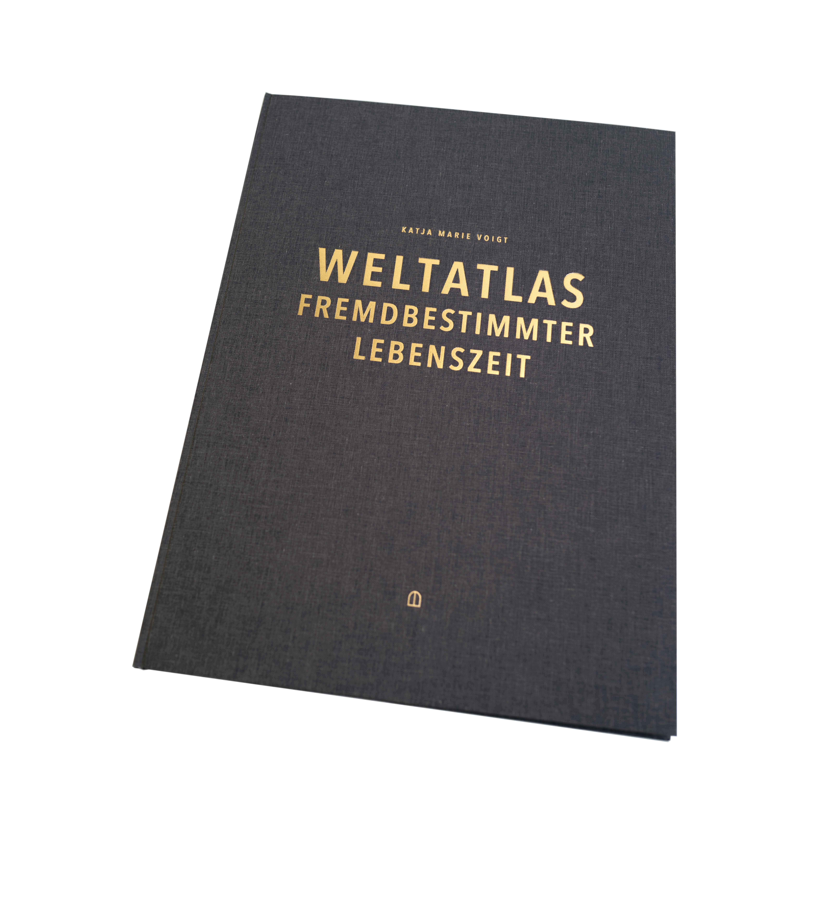
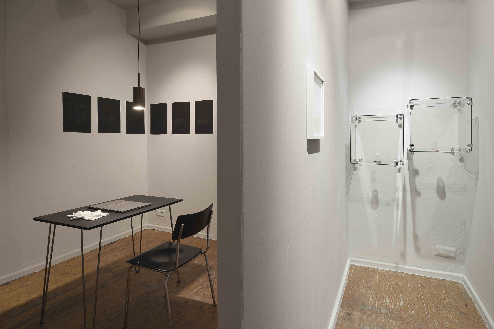
Leseraum Weltatlas fremdbestimmter Lebenszeit, Reliquiensammlung, ACC Weimar, 2022
Foto: Claus Bach
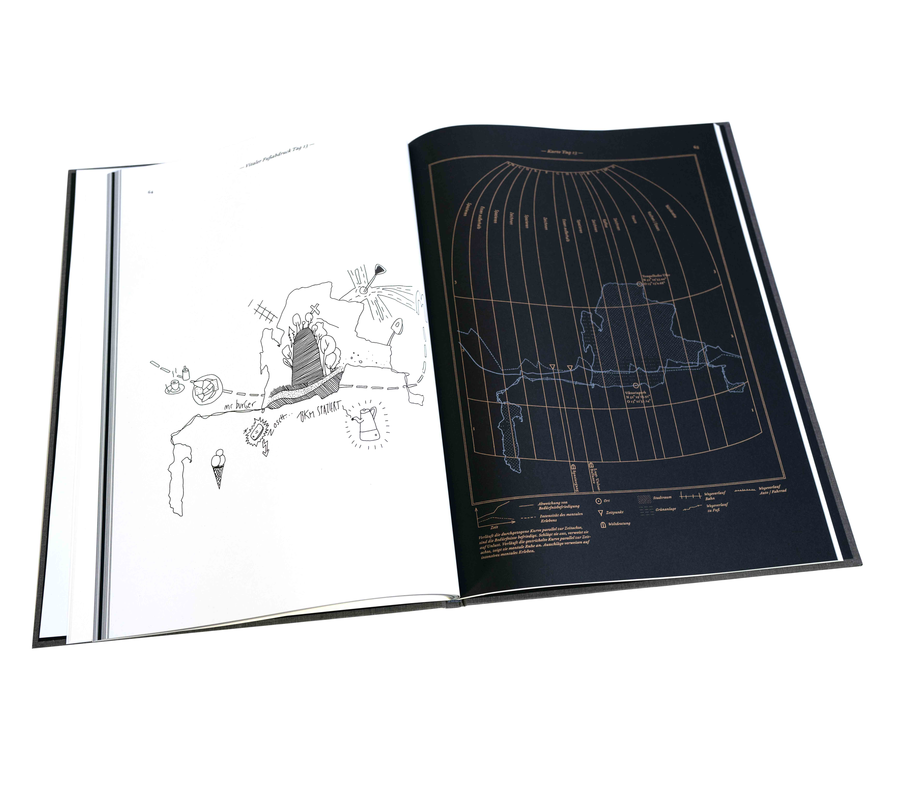

Handelsverlauf der Handlungen der Künstlerin und der/des Fremden.
oben: CAD Datei unten: Radierung

Höhlendorfworkshop in der Werkstatt der Initiative Haus der Statistik

Außenansicht, Blick in den alten Fahrradladen
Das Handbuch zur Überwindung der Zeit
zeigt die Auseinandersetzung mit der Echtzeit individuellen Erlebens und ihrer medialen Repräsentation.
Zeit, als eine Grunddeterminante des Lebens, wird im Handbuch zur Überwindung der Zeit in ihrer Komplexität vergegenwärtigt. Jede*r Leser*in kann im Laufe der Lektüre ihre besondere Art und Weise der Zeitüberwindung zu fassen bekommen – und sei es nur für einen Augenblick.
Das Handbuch zur Überwindung der Zeit ist ein Hand gebundenes Unikat – ein künsterisches Sammelsurium. Arbeiten, die zum Thema Zeitwahrnehmung entstanden sind werden visualisiert, diskutiert und reflektiert.
Zum Anfassen, Aufschlagen, Durchblättern und Eintauchen: Das Handbuch zur Überwindung der Zeit ist eine Einbuchbibliothek – Da es 2018 in die Sammlung der Herzogin Anna Amalia Bibliothek in Weimar übergegangen ist, kann es von nun an im Hauptlesesaal des Studienzentrums gelesen werden.

Ausstellungsansicht, Kunsthalle am Hamburger Platz Berlin Weißensee

Ausstellungsansicht, Kühlhaus Berlin
Sensing Bees ist ein partizipatives Kunstprojekt der Künstlerinnengruppe Moabees, das im Rahmen von BeeCoin entstanden ist. Der BeeCoin ist eine Kryptowährung, die auf dem Wohlergehen von Bienen beruht und ein Projekt von KUNSTrePUBLIK.
Die Künstlerinnen und Imkerinnengruppe Moabees arrangiert Besuche bei den Honigbienenvölkern, die im Haus der Statistik leben und arbeiten.
Eine Auseinandersetzung mit den in den Völkern installierten Prozessor-Sensoren, den menschlichen Sinnesapparaten und dem Bienenauge. Die Umgebung der Völker wird mit einer Bienenkamera gescannt. Artefakte aus dem Haus und dessen Hof werden gesammelt und die Fundstücke mithilfe des fotochemischen Verfahrens der Cyanotypie abgelichtet. Als Belichtungsquelle dient ultraviolettes (Sonnen-)Licht, das die Bienen erkennen können, während es für menschliche Augen normalerweise unsichtbar bleibt.

Biene die im Haus der Statistik lebt und arbeitet

Workshop Sensing Bees im Haus der Statistik, Belichtung der Cyanotypien

Ausstellungsansicht Cyanotypien der Fenster aus dem Haus der Statistik, Berlin Art Week
Projekte, Förderungen
2022 // Realisierung Supra Swing / 1. Platz Kunst am Bau Wettbewerb Forschungsneubau supraFAB Freie Universität Berlin2021 // CO–founder Siebdruck-Riso-Fusion / offene Werkstatt Gropiusstadt
2018 - 2022 // PFUSCH! Pfusch am Bau Kunst am Bau / gefördert vom Bundesministerium für Bildung und Forschung (BKJ) / Trägerin: Kunst Werk Stadt Berlin
2013 - 2022 // Moabees – ein Pilotinnenprojekt am ZK/U Berlin / gefördert vom Bundesministerium für Bildung und Forschung (BKJ) / Trägerin: Kunst Werk Stadt Berlin in Kooperation mit dem ZK/U Berlin
2017 - 2018 // NACHT / gefördert vom Berliner Projektfonds Kulturelle Bildung / Trägerin: Kunst Werk Stadt Berlin
2017 // CO-founder Tiny Penthaus / Projektraum / im Rahmen des Initiativenzusammenschlusses ZUsammenKUNFT / Pilotprojekt Initiative Haus der Statistik in Berlin Kreuzberg
2016 - dato // CO-founder Penthaus für schöne Formate / Druckstudio für Risographie
2016 - 2017 // Kunstpostamt / gefördert vom Bundesministerium für Bildung und Forschung (BKJ) / Trägerin: Kunst Werk Stadt Berlin
2012 - 2013 // Bienenbewegung / gefördert vom Berliner Projektfonds Kulturelle Bildung / Trägerin: Kunst Werk Stadt Berlin
Auswahl Ausstellungen
2022 // Sonnenbad am ruruHaus / Künstlerinnenduo #KAMEL / documenta fifteen
2022 // Kunst und Kooperation / Künstlerinnenduo #KAMEL / Kommunale Galerie Berlin
2022 // Lesung Weltaltals fremdbestimmter Lebenszeit / ACC Galerie Weimar
2022 // Konstellationen Künstlerischer Forschung / ACC Galerie Weimar
2022 // Konstellationen Künstlerischer Forschung / Kunsthalle Erfurt
2021 // Wachs und Papier / Künstlerinnengruppe Moabees / Haus am Mierendorfplatz
2020 // Aerosol im Körnerpark / Kunst im öffentlichen Raum / Galerie im Körnerpark Berlin
2020 // Berliner Blau / Galerie im Körnerpark Berlin
2020 // Kartierungen fremdbestimmter Lebenszeit / Mantik Berlin
2019 // Sensing Bees / Workshopreihe im Rahmen des Projects BeeCoin, Statista, Berlin Art Week // in Kooperation mit Hiveeyes, Nascent, KUNSTrePUBLIK/
2019 // DRUCK DRUCK DRUCK / Kuratiert von Nina Prader und John Z. Komurki /
Galerie im Körnerpark Berlin
2019 // Lecture / Tiny Data – failure & utopia / 10th SAR International Conference on Artistic Research
Zurich University of the Arts
2019 // Manifest of Practice / Bauhaus 100 / Thüringer Staatskanzlei, Berlin
2018 // Lange Nacht der Bilder / Alte Gießerei Berlin
2018 // Lecture / Bauhaus Universität Weimar / [dis]solving boundaries – Young Bauhaus Research Conference
2018 // The Vivid Unknown / Kunstraum rosalux Berlin
2017 // Die Kapelle und das spezifische Gewicht der Zeit / kuratiert von Anne Brannys / ehem. Kapelle im Stadtschloss Weimar
2016 // Künstlerinnengruppe Moabees / HONIGKINO #3 / ZK/U Berlin
2015 // AREYOUTHERE? / L40, Verein zur Förderung von Kunst und Kultur am Rosa-Luxemburg-Platz e.V.
2014 // IMAGO / Galerie Zwitschermaschine, Berlin
2014 // REIF / Kühlhaus Berlin
2014 // TI:ME / Salon am Moritzplatz Berlin / kuratiert von Mari Poller
2013 // Lecture / HANDBUCH ZUR ÜBERWINDUNG DER ZEIT / Kunsthalle am Hamburger Platz, Berlin Weißensee
2013 // 7LOCOMOTION / Kunsthalle am Hamburger Platz, Berlin Weißensee
2012 // MONHABITE EINE EXPEDITION/ ZK/U (Zentrum für Kunst und Urbanistik, Berlin)
2011 // Lecture / IBA LABOR Kunst Stadt, Hamburg / mit dem Club der internationalen Raumforscher Berlin
Master of Arts, Kunst im öffentlichen Kontext, Weißensee Kunsthochschule Berlin
Vorsitzende Kunst Werk Stadt Berlin e.V.
Bachelor of Science, Architektur, Technische Universität Berlin
Gründungsmitlgied Künstlerinnen- und Imkerinnengruppe Moabees
info * katjamarievoigt.com
© Katja Marie Voigt
Bilder (wenn nicht anders angegeben)
Katja Marie Voigt und VG-Bild Kunst/Bonn
Kunst Werk Stadt Berlin e.V. Moabees – ein PilotInnenprojekt
Impressum
Verantwortlich für den Inhalt nach § 55 Abs. 2 RStV:
Katja Marie Voigt
E‑Mail: info * katjamarievoigt.com
Haftungsausschluss:
Haftung für Inhalte
Die Inhalte unserer Seiten wurden mit größter Sorgfalt erstellt. Für die Richtigkeit, Vollständigkeit und Aktualität der Inhalte können wir jedoch keine Gewähr übernehmen. Als Diensteanbieter sind wir gemäß § 7 Abs.1 TMG für eigene Inhalte auf diesen Seiten nach den allgemeinen Gesetzen verantwortlich. Nach §§ 8 bis 10 TMG sind wir als Diensteanbieter jedoch nicht verpflichtet, übermittelte oder gespeicherte fremde Informationen zu überwachen oder nach Umständen zu forschen, die auf eine rechtswidrige Tätigkeit hinweisen. Verpflichtungen zur Entfernung oder Sperrung der Nutzung von Informationen nach den allgemeinen Gesetzen bleiben hiervon unberührt. Eine diesbezügliche Haftung ist jedoch erst ab dem Zeitpunkt der Kenntnis einer konkreten Rechtsverletzung möglich. Bei Bekanntwerden von entsprechenden Rechtsverletzungen werden wir diese Inhalte umgehend entfernen.
Haftung für Links
Unser Angebot enthält Links zu externen Webseiten Dritter, auf deren Inhalte wir keinen Einfluss haben. Deshalb können wir für diese fremden Inhalte auch keine Gewähr übernehmen. Für die Inhalte der verlinkten Seiten ist stets der jeweilige Anbieter oder Betreiber der Seiten verantwortlich. Die verlinkten Seiten wurden zum Zeitpunkt der Verlinkung auf mögliche Rechtsverstöße überprüft. Rechtswidrige Inhalte waren zum Zeitpunkt der Verlinkung nicht erkennbar. Eine permanente inhaltliche Kontrolle der verlinkten Seiten ist jedoch ohne konkrete Anhaltspunkte einer Rechtsverletzung nicht zumutbar. Bei Bekanntwerden von Rechtsverletzungen werden wir derartige Links umgehend entfernen.
Urheberrecht
Die durch die Seitenbetreiber erstellten Inhalte und Werke auf diesen Seiten unterliegen dem deutschen Urheberrecht. Die Vervielfältigung, Bearbeitung, Verbreitung und jede Art der Verwertung außerhalb der Grenzen des Urheberrechtes bedürfen der schriftlichen Zustimmung des jeweiligen Autors bzw. Erstellers. Downloads und Kopien dieser Seite sind nur für den privaten, nicht kommerziellen Gebrauch gestattet. Soweit die Inhalte auf dieser Seite nicht vom Betreiber erstellt wurden, werden die Urheberrechte Dritter beachtet. Insbesondere werden Inhalte Dritter als solche gekennzeichnet. Sollten Sie trotzdem auf eine Urheberrechtsverletzung aufmerksam werden, bitten wir um einen entsprechenden Hinweis. Bei Bekanntwerden von Rechtsverletzungen werden wir derartige Inhalte umgehend entfernen.
Impressum vom Impressum Generator der Kanzlei Hasselbach, Bonn